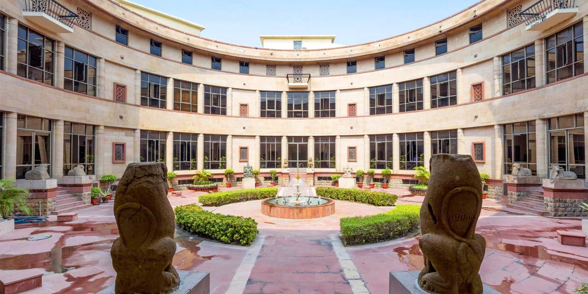
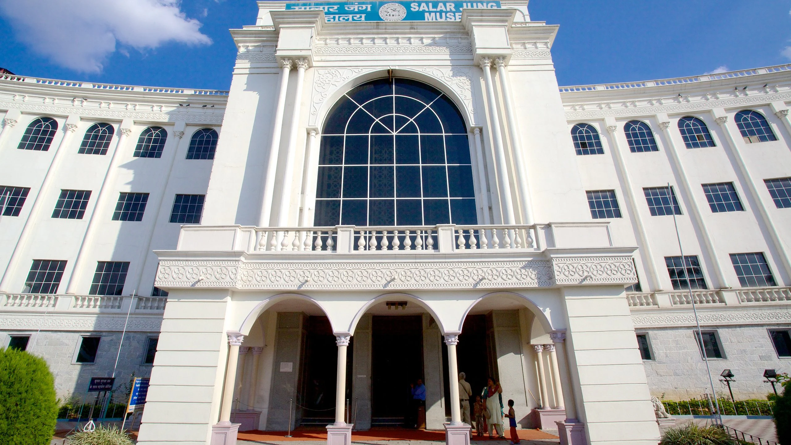

Museums & Antiques
Discover India's rich heritage through its magnificent museums and priceless antiquities that span millennia of civilization.
National Museums

National Museum, Delhi
India's premier museum housing over 200,000 artifacts spanning 5,000 years of history. Highlights include the Harappan Gallery with Indus Valley artifacts, Buddhist relics, and an exquisite collection of miniature paintings.
Must-see: The 4,600-year-old "Dancing Girl" bronze from Mohenjo-Daro.

Indian Museum, Kolkata
Established in 1814, Asia's oldest museum features six sections spanning art, archaeology, anthropology, geology, zoology, and economic botany.
Highlight: The urn said to contain Buddha's ashes and an Egyptian mummy from 2000 BCE.

Salar Jung Museum, Hyderabad
One of the three National Museums of India, showcasing the art collection of the Salar Jung family. Contains rare artifacts from India, Persia, Europe and the Far East.
Famous exhibit: The 19th century musical clock with a miniature toy soldier that comes out to strike the gong.
Archaeological Museums
Government Museum, Chennai
Second oldest museum in India (1851) with the world's largest collection of Roman antiquities outside Europe. The Bronze Gallery contains masterpieces of Chola art.
Treasure: The 10th century Nataraja bronze, considered the finest example of Chola metalwork.
Patna Museum
Showcases artifacts from ancient Pataliputra and the Mauryan empire. The most famous exhibit is the Didarganj Yakshi from the 3rd century BCE.
Unique collection: Relics from the ancient universities of Nalanda and Vikramshila.
Priceless Indian Antiques
Dancing Girl
Harappan bronze (2500 BCE), one of the earliest lost-wax castings showing advanced metallurgy of Indus Valley Civilization.
Ashoka Pillar
3rd century BCE polished sandstone pillars with edicts, the national emblem features the four-lion capital from Sarnath.
Tipu Sultan's Sword
18th century wootz steel sword with gold inscription: "The sword of the ruler is the protector of the people."
Kohinoor Replica
Replica of the famous diamond mined in Golconda, mentioned in texts since 1304, now part of British Crown Jewels.
Conservation Efforts
India has implemented rigorous conservation programs to protect its antiquities:
- Archaeological Survey of India (ASI): Manages over 3,650 ancient monuments and archaeological sites
- National Mission on Monuments and Antiquities: Documented over 3.5 million antiquities to prevent smuggling
- INTACH: Non-profit organization that has conserved over 800 heritage sites across India
- Digital preservation: 3D scanning and virtual tours of major museums and heritage sites
Recent initiatives include the "Adopt a Heritage" scheme where corporations can sponsor maintenance of monuments.